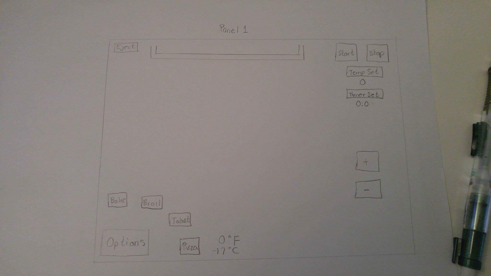
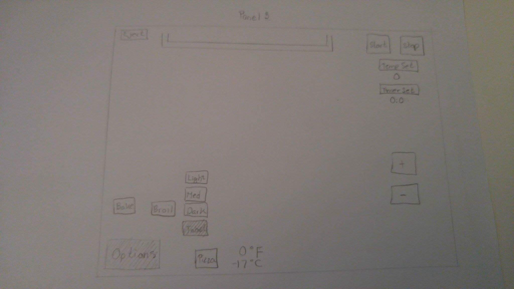
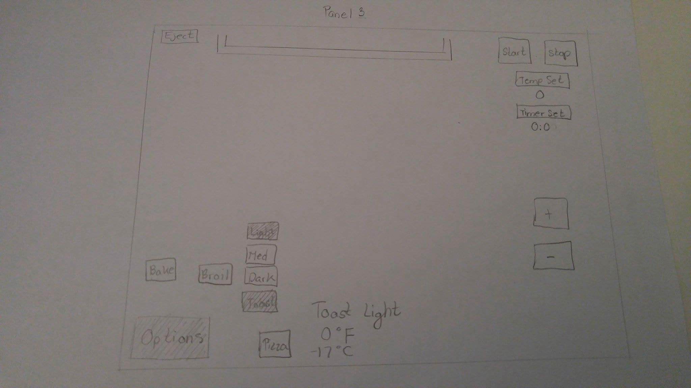

The first panel displays all the buttons of the toaster. Starting with the eject button on the upper left, the option button on the lower right, the start and stop button on the upper right. Along with the temp set and timer set buttons. Lasty is the plus and minus buttons on the bottom right.   